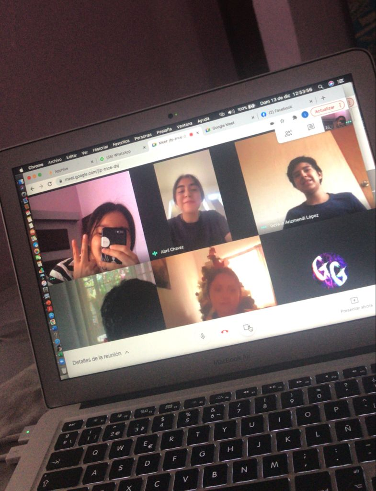

CAFÉ LITERARIO ONLINE
- "Debido a la contingencia por COVID-19, el café literario del 13 de Noviembre del 2020, fue realizado de manera online.
- Fue una manera distinta de trabajar, más no imposible. Nuestro grupo realizó una obra de teatro, fue una experiencia algo divertida y al mismo tiempo estresante, debido a la modalidad.
- La actividad se realizó mediante la plataforma de zoom, donde asistieron los familiares de los estudiantes de bachillerato del colegio anglo.
- El trabajo de todos los alumnos fue muy bien reconocido, dandonos todos al final un fuerte aplauso.